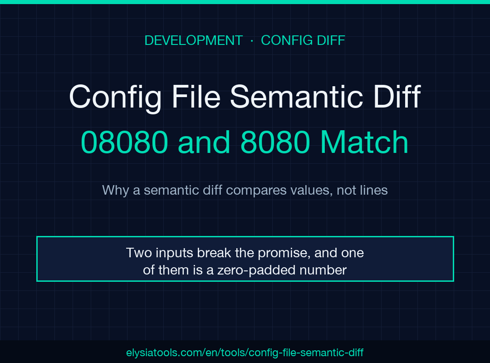
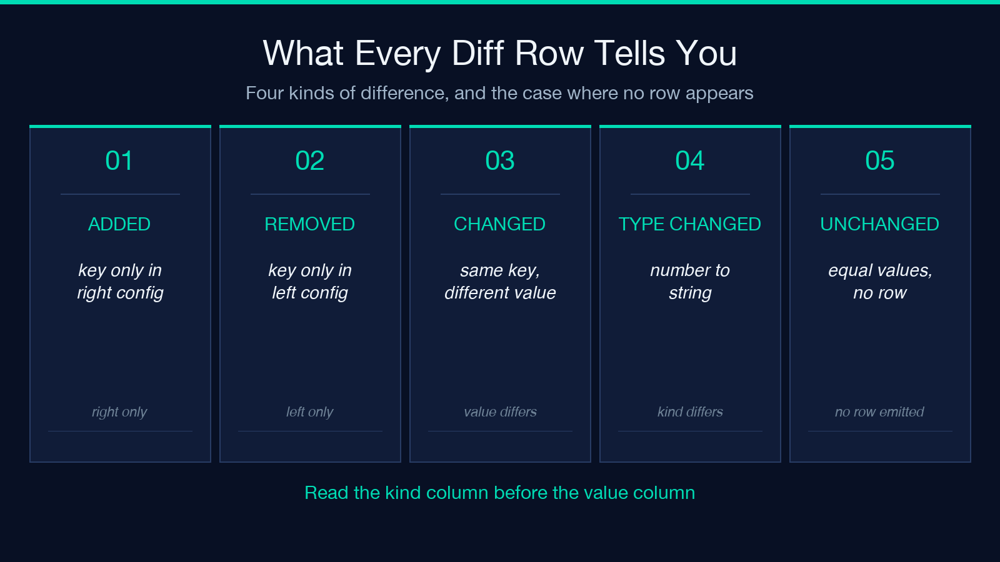
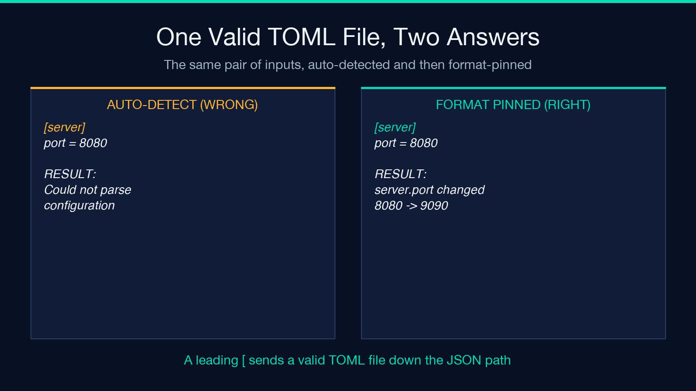
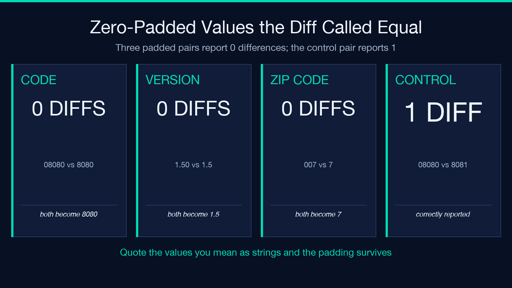

Two configuration files can differ in each single byte and still describe the same system. That is the premise of Config File Semantic Diff, and I confirmed it holds for JSON and YAML by re-implementing its comparison logic and running it against the tool's own parsers. Each number in this guide was measured that way. But two inputs break the premise, and one of them is the number 08080.
The tool's promise is narrow and precise: compare by key path, ignore ordering and formatting noise. The implementation keeps it. Both sides are parsed into plain values first — JSON through a JSON parser, YAML through js-yaml, TOML through a TOML parser, dotenv through a hand-written decoder — and only then compared.
The comparison is a recursive walk over two value trees. At each node it asks one question first: are these the same type? If not, the node is recorded as a type change and the walk stops there. If the types match and both nodes are objects, the walk descends into the union of their keys, sorted alphabetically. If the types match and both nodes are arrays, it descends by index. If the types match and both nodes are scalars, they are compared directly.
Measured against the tool's own two published examples, the walk reproduces both exactly: the cross-format JSON/YAML pair reports 1 changed and 0 of everything else, and the dotenv audit reports 1 added, 1 removed and 2 changed. Those are the same numbers the tool's metadata asserts, which is a useful sanity check before trusting it on anything larger.
That yields four kinds of difference: added, removed, changed, and type-changed. The tool's own first example pairs a JSON deployment config against the YAML version of the same file with the keys in a different order and the port moved from 8080 to 9090. The tool reported exactly one difference — server.port changed from the number 8080 to the number 9090 — and the reordering contributed nothing.
That is a good design, and it explains why a semantic diff can come out shorter than a line diff of the same two files. It matters because it reframes the question the tool answers: not which lines moved, but which settings moved. The consequence is that you have to read the paths to understand the change, because the path carries the whole message.
You can run it at Elysia Tools if you want to follow along with a pair of files of your own.
The output is not a line diff. It is a table of key paths, each tagged with a kind and carrying the old and new values, and the path grammar decides how readable that table is.
The rules are simple once you know them. A key made of letters, digits, underscores, dollars, or hyphens joins its parent with a dot. An array index is bracketed. A key that itself contains a dot is bracketed and quoted, because a bare dot would be ambiguous. The root of a document is written $.
So server.port is a key named port inside an object named server. plugins[0] is the first element of the plugins array. outer["my.key"] is a key that literally contains a dot, and m[0].k is a key named k inside the first element of an array.
The asymmetry is worth internalizing. A hyphenated key like my-key renders as outer.my-key and reads like a dotted path, while a dotted key like my.key renders as outer["my.key"] and reads like something else entirely. The same logical structure therefore produces two markedly different-looking addresses depending only on which characters a key happens to contain.
In practice this is what you search on. When a diff shows you server.port and you need to locate it in a repository, you search for the path instead of the value. A path that changes shape the moment a key gains a dot is a small tax on each grep you run against CI output, and it is a tax that surfaces only in the one incident where you are already out of time.
Now, which paths exist at all. Object key order is ignored. The walk sorts the union of keys before descending, so the same object serialized in two different orders produces zero differences. Arrays are compared by index, and the tool is explicit about why: order inside an array is usually configuration semantics.
Index alignment has consequences that are easy to misread. Measured against a three-element array ["a","b","c"], five comparisons behave like this:
p[2], kind added.p[2], kind changed.["c","b","a"] — 2 differences, at p[0] and p[2].["b","c","a"] — 3 differences, at p[0], p[1] and p[2].Read that list twice. A reversal of three elements produces two changed rows, not three, because the middle element stays in the middle and never appears in the diff. An append and a last-element edit both land on the same path p[2], distinguished only by the kind column. So if you are skimming a diff for a count of how many things changed, the row count is a poor proxy — the kind is what tells you whether a path appeared or was overwritten.
For example, a deploy that rewrites three plugin entries in a different order reports two changed rows, which reads like one plugin was edited twice instead of two plugins being reordered. If you would prefer to watch the reordering than read about it, the JSON Diff Visualizer renders that comparison as a side-by-side view.
dotenv has no types, so this tool assigns them. An unquoted value matching true or false, case-insensitively, becomes a Boolean. A value of null or ~ becomes null. A value matching a numeric pattern becomes a Number. An empty value becomes an empty string. Anything else stays a String. Quoting changes the result: PORT=8080 is the Number 8080, while PORT="8080" is the String "8080", and comparing those two gives a type change instead of a value change.

Single quotes are literal — no escape processing happens. Double quotes process the standard escape sequences. An unquoted value has any trailing # comment stripped before it is typed.
This typing is the reason cross-format comparison works at all. It is what lets a dotenv PORT=8080 match a YAML port: 8080 as the same Number instead of two different-looking Strings. It is also why the next section matters: the decoder does real work, and real work has edges.
Here is the first failure, and it is loud. Paste a perfectly valid TOML file — a section header line reading [server], then a key line reading port = 8080 — and let the tool auto-detect the format.

It will not compare the file. It will refuse the input, and the error will name JSON instead of TOML, because the auto-detect routine checks the first character before anything else and treats a leading [ as the start of JSON. The classic V8 wording reads Unexpected token s in JSON at position 1. The file is valid; the guess about its format is not.
The fix is one dropdown. Set Format to TOML on both sides and the same pair compares cleanly, reporting server.port changed from 8080 to 9090.
The reachability is worse than one bad shape, though. The auto-detect routine has a TOML branch, but that branch is consulted only if the earlier JSON check and the earlier dotenv check both fail. The dotenv check accepts any line shaped like key = value or key: value with a letter-led key, and that covers all bare TOML documents. So a TOML file with no section header is detected as dotenv, and a TOML file with a section header is detected as JSON. Measured across a sweep of realistic documents, the TOML branch fired for 2 of 10 — both of them documents whose keys begin with a digit or a hyphen, which is not what TOML looks like in practice.
Detected-as-dotenv is not a harmless fallback, either, because the dotenv decoder has no idea what a TOML value is. An inline table server = { port = 8080 } is read as the String "{ port = 8080 }". An array ports = [8080, 9090] is read as the String "[8080, 9090]". Compare either against a JSON file with real objects and real arrays and you get type changes that do not exist. One case proves the rule: a TOML file whose section header is preceded by a comment skips the JSON check, gets caught by the dotenv check, and then loses its [server] line entirely, because that line does not match the dotenv assignment pattern. The table is flattened into a bare port key and the diff compares the wrong shape without complaining.
The second failure does not announce itself at all. The dotenv decoder runs an unquoted value through a numeric pattern that permits leading zeros and then converts it with Number, so CODE=08080 becomes the Number 8080. CODE=8080 also becomes the Number 8080. Compare them and the tool reported zero differences. The configurations are identical, and they are not.

The same thing happens to VERSION=1.50 and VERSION=1.5. Both become 1.5, and the diff is empty.
This is the classic leading-zero problem, and it lands on exactly the values people care about: zero-padded identifiers, account numbers, postal codes, numeric string keys, a version encoded as a padded number. Any of those compared against its unpadded twin produces a clean bill of health. Measured across four padded pairs — 08080/8080, 012345/12345, 007/7 and 1.50/1.5 — the tool reported 0 differences in all four, while a control pair of genuinely different codes was reported correctly as 1 difference.
Two things make this worse than a parser curiosity. First, the dotenv typing is what does the damage — the same string inside a YAML file stays a String, because YAML has a quoted-string type to fall back on. The failure is specific to dotenv. Second, there is no warning channel at all: no note about values that look numeric but might be identifiers, no count of skipped coercions. The summary reports unchanged.
The mitigation is boring and reliable. Quote the values. CODE="08080" is the String "08080", and comparing it against CODE="8080" gives one changed row with the string type preserved.
Even with both formats pinned, the comparison stays literal in ways worth knowing.
Type changes stop the walk. {"a": null} against {"a": {"x": 1, "y": 2}} is one difference, not three. The subtree inside the object is never compared, because the walk already decided that the two nodes are different kinds of thing. A diff reporting one type change where a whole subtree was replaced tells you the shape moved, not what was underneath it.
Flattened and nested configurations never meet. A dotenv file holding SERVER_PORT=8080 and a YAML file holding server.port describe the same setting as far as the application is concerned, and the diff reported two differences — SERVER_PORT removed, server added — because no path can make a flat key equal a nested one. Cross-format comparison works when the two documents share a shape; it does not reconcile shapes.
YAML carries its own type surprises. js-yaml follows YAML 1.2, where yes, no, on and off are Strings instead of Booleans, so flag: yes compared against a JSON true is a type change. An unquoted YAML date becomes a Date object, so d: 2020-01-01 compared against the JSON String "2020-01-01" is a type change between a date and a string. Measured, the YAML yes case reports 1 type change from string to boolean, and the YAML date case reports 1 type change from date to string — in each case the tool is reporting a real difference in the parsed values, and that real difference is a difference between two ways of writing the same intent.
None of this is a defect report. It is the boundary of what "semantic" means here. The tool compares parsed values. It does not know that PORT and server.port are the same setting, that yes in a YAML file probably meant true, or that a zero-padded code was an identifier all along.
Pin the format whenever the dropdown lets you. Auto-detect is fine for JSON and for dotenv, and wrong for TOML. For an environment audit instead of a file-to-file comparison, the Environment Config Diff Visualizer is built around the shape of variable drift.
Read the kind column before the value column. Added, removed, changed and type-changed are four different urgencies, and the value alone will not tell them apart.
Count paths, not rows, whenever the result looks suspiciously clean. A reversed array and an appended element both surface on a single path.
Quote each dotenv value that is semantically a string — padded numbers, postal codes, account identifiers, versions with leading zeros — and treat an empty diff on a dotenv file as a claim and not a conclusion. If the values look numeric, check the leading zeros first.
For the formats themselves, the HCL/TOML Converter and the HCL/YAML Converter are useful when you need to move a document between formats before you compare it. Browse more Development tools if you are auditing configuration shape across a stack.
I set out to show you where a semantic diff lies, and I ended up proving it compares syntax instead of meaning. That is not a flaw in the tool. It is what configuration drift is: a syntax problem wearing a semantics costume. The only thing that makes a diff actionable is the moment a human decides which layer of meaning was supposed to hold.
So the question worth keeping is the one the tool cannot answer for you. When a key path reads the same and the system behaves differently anyway, which of the two do you trust?